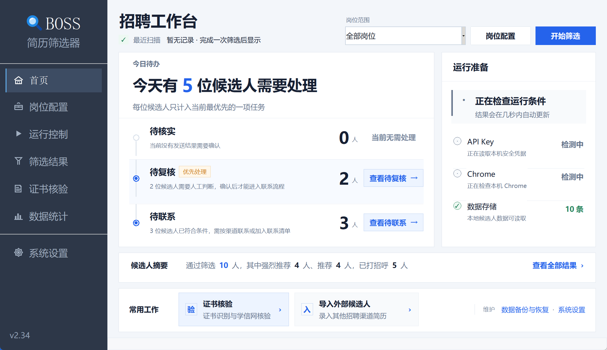

候选人获取与简历导入
自动滚动获取 BOSS 推荐候选人；批量导入 PDF、DOCX、旧版 DOC、TXT、MD、RTF 和 HTML 简历。
本地桌面招聘工作台 · Windows / macOS
从 BOSS 推荐候选人和外部简历，到规则筛选、人工复核、联系跟进与岗位复盘； 每个结论保留分数、命中证据和处理状态，信息不足时回到人工判断。
完整演示
岗位配置、候选人获取、可解释筛选、人工复核和联系跟进。演示只使用合成数据。


系统启用“减少动态效果”时显示静态封面。 下载高清 MP4
处理顺序
解析招聘需求，核对硬条件、技能权重和配置冲突。
读取 BOSS 推荐候选人，或导入猎头、内推等外部简历。
先检查硬条件，再计算技能分；AI 只作为可选辅助证据。
集中处理临界分数、信息缺失和画像冲突。
发送前确认，维护回复与跟进，并按岗位复盘误推误杀。
核心能力
自动滚动获取 BOSS 推荐候选人；批量导入 PDF、DOCX、旧版 DOC、TXT、MD、RTF 和 HTML 简历。
硬条件先行，技能评分保留拆解；AI 不覆盖明确硬条件，证据不足时进入人工复核。
联系清单发送前确认，结果不明确时暂停；维护回复、约面、下次跟进和岗位反馈样本。

数据边界
简历解析、规则筛选、候选人状态和备份默认保存在本机。启用 AI 能力时，界面显示模型和发送范围；API Key 保存在系统安全凭据中。

开始使用
普通用户无需安装 Python。首次使用需要 Chrome，并保持 BOSS 账号已登录。